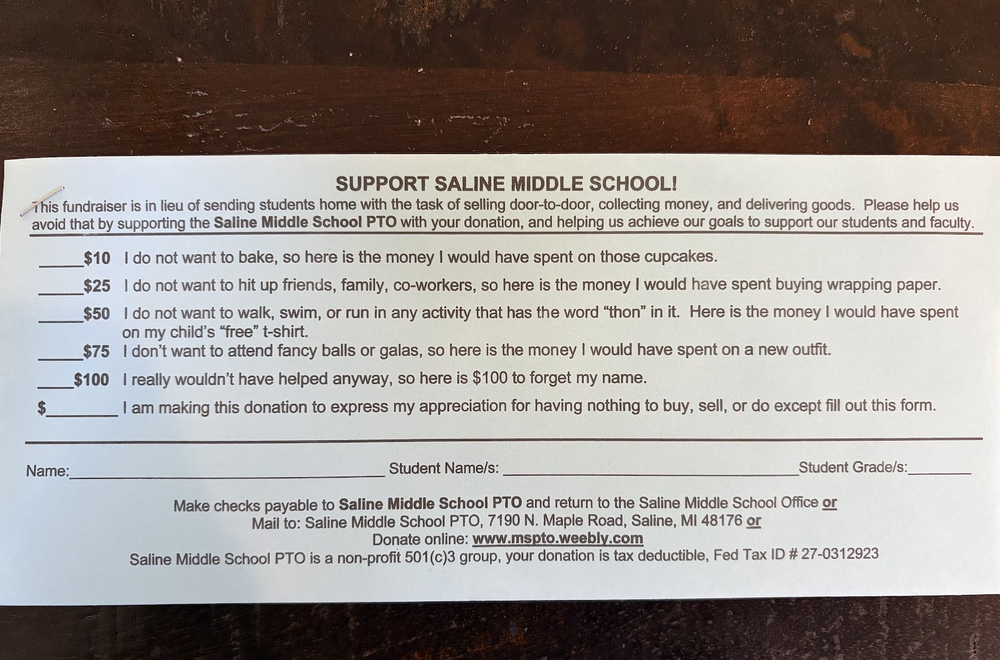

Same photo, three ways to turn it into Field Notes content: which behavioural spine, which page type, and how a charity would steal the move, with John List’s field experiments in the mix.

Source: Saline Middle School PTO donation slip (shared via X). Opens by naming what it replaces (door-to-door selling, collecting, delivering), then sells fixed amounts as “money I would have spent on cupcakes / wrapping paper / a ‘free’ t-shirt,” up to “$100 to forget my name.” Website note: this is a tactic in use, not proof the form raised more money than a bake sale.
Object-first piece on science-behind.html. Spine is DellaVigna, List & Malmendier (2012): a chunk of door-to-door giving is people paying to avoid saying no. The PTO form sells that escape upfront, with humour, so the gift can stay closer to warm glow than to awkward compliance.
Real form · Saline Middle School PTO
The slip doesn’t ask for a gift in the abstract. It prices out of the fundraising theatre parents already resent: baking, wrapping-paper sales, galas, door-to-door. Same dollars, different story about what they’re buying.
List bridge
In DellaVigna, List & Malmendier’s door-to-door drive, a flyer with a “Do Not Disturb” box cut giving by roughly 28–42%, mostly gifts under $10. People sort away when escape is cheap. Saline’s form is the reverse product: escape is the offer, and the price is printed.
Charity apply
Stop manufacturing the charade your donors will pay to skip. Offer a quiet path with named amounts before you lean on peer pressure or in-person asks. Keep the joke if it fits the brand; keep the honesty either way. Pair with a real use of funds so warm glow isn’t the only fuel.
Cite: DellaVigna, List & Malmendier, QJE 2012; site principles Framing Effect, Mental Accounting, Anchoring, Warm-Glow Giving. Screenshot proves the tactic exists, not that it raised more than wrapping paper.
Landing shape: Science Behind entry with photo of the slip, four mechanism chips, List social-pressure bridge, short charity apply close. Best if you want one shareable decode that links back to existing Principles.
Put it on experiments.html as a control-vs-treatment charity mail or email test. Theory: reframing the gift as money you’d have spent on the annoying alternative raises response and average gift size. List’s matching and challenge work sits in the design notes: change the story of the ask before you throw a richer match ratio at it.
Builds on · Framing Effect · Mental Accounting · Anchoring
A mid-size charity’s warm list gets one of two reply cards. Same suggested amounts ($25 / $50 / $100 / other). Only the line under each amount changes.
Control
$50: Support this year’s student programs.
Treatment
$50: I don’t want another “thon.” Here’s what the free t-shirt would have cost.
List design notes
Karlan & List (AER 2007): a match lifts response (~22%) and revenue per piece (~19%), but 2:1 and 3:1 add nothing over 1:1. Rondeau & List (Sierra Club field): an announced challenge gift beat matching on total dollars. So: test the frame first; if you add a price tool later, prefer a simple 1:1 match or a named challenge over a flashier ratio.
Primary outcomes
Response rate; average gift among donors; total revenue per solicitation. Secondary: share picking the top printed tier ($100), and open-text “other” amounts. Power for a small relative lift in response on a warm list, same discipline as other blueprints on the page.
Cite: Karlan & List 2007; Rondeau & List challenge/match field work; mechanism pages above. Ethics: no false claim that a gift cancels a real event the charity still plans to run.
Landing shape: full experiment blueprint. Use this if the interesting question is “does the joke ladder actually move money,” not only “what mechanisms are on the slip.”
Flip the order. Open on what List’s field experiments already showed about pressure, price, and leadership gifts, then show the Saline slip as a practitioner who stumbled into the same logic without the papers. Charity apply becomes a short field guide, not a product decode.
Field experiments · charitable giving
Worked example
Saline Middle School PTO: names the friction it removes, prices the buy-out ($10–$100), files each gift under a mental account (“cupcakes,” “wrapping paper,” “forget my name”). That’s framing + mental accounting + anchoring in one strip of paper, aimed at the same pressure List measured at the door.
Charity field guide
(1) Offer a no-theatre path with printed amounts. (2) If you add a price tool, use 1:1 or a named challenge, not 3:1 theatre. (3) Never invent an event you’ll still force people through after they’ve paid to skip it. (4) Measure response and dollars, not likes on the joke.
Same List papers as above. Form photo as illustration only. Tone closer to dont-say-the-e-word / policy-based-evidence than to a Science Behind product walkthrough.
Landing shape: short Reading the Research report. Use this if List is the headline and the PTO form is the sticky example, especially for charity / NFP readers.